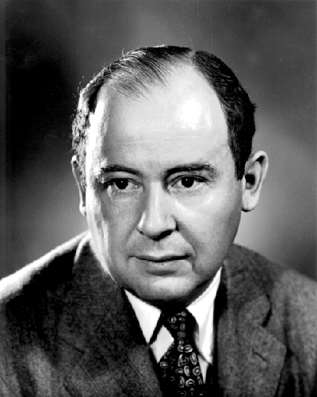
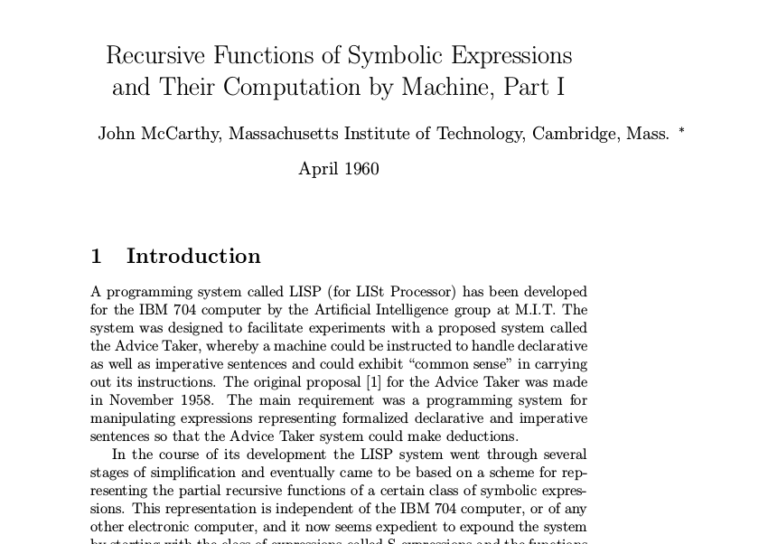
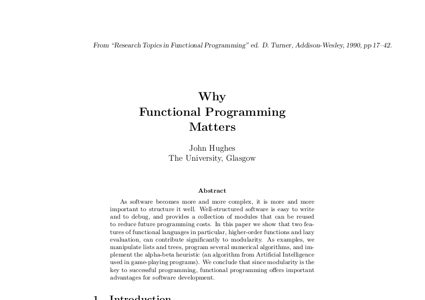
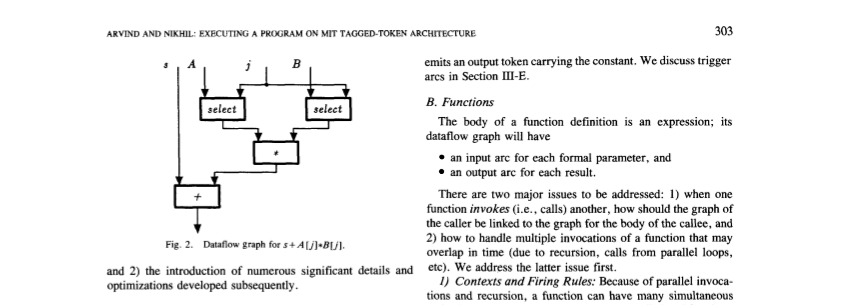
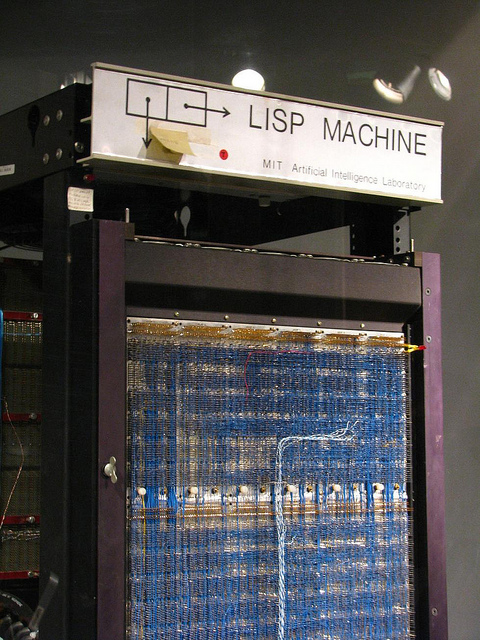
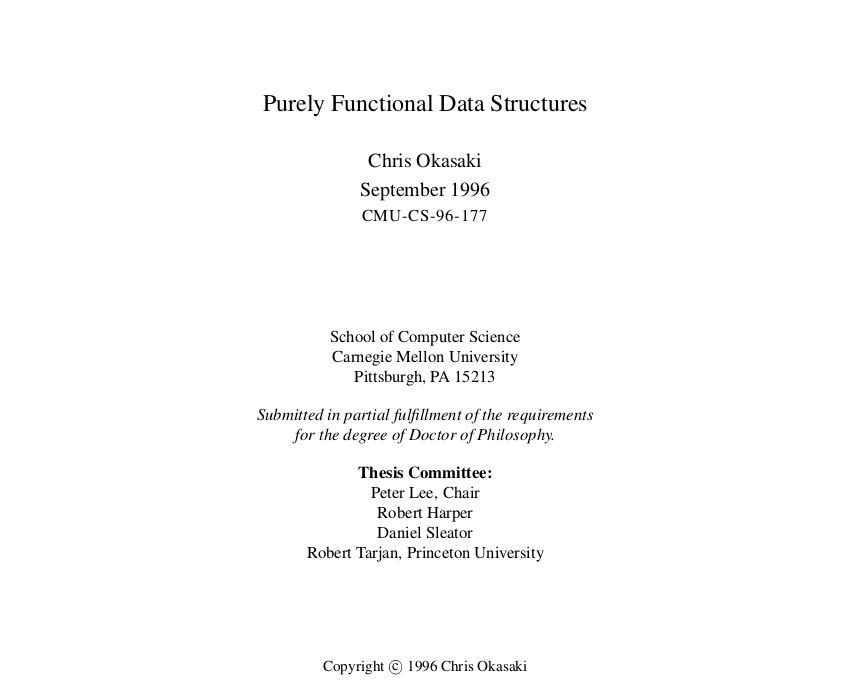
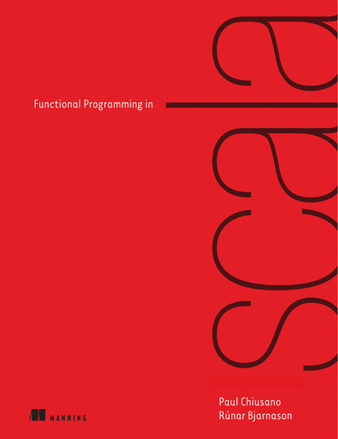
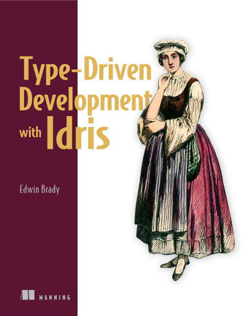

La programmation fonctionnelle
sans céder à la mode
Frédéric Cabestre
@fcabestre


Histoire
Le présent, sans passé, n'a pas d'avenir— Fernand Braudel
Alan Turing

John von Neumann
Alonzo Church

John MacCarthy

John Hughes

Retard à l'allumage
S'il n'y a pas de solution c'est qu'il n'y a pas de problème— Proverbe Shadock
Von Neumann Style
Fossé Sémantique
Fossé Sémantique
Architectures dédiées



- Architectures Dataflow
- Machines Lisp
Penser différemment
Programmer avec des fonctions
functĭo, ōnis, f. (fungor), accomplissement, exécution— Dictionnaire Gaffiot
Fonction
Transparence référentielle & pureté
Une expression $\mathcal{e}$ est référentiellement transparente si du point de vue d'un programme $\mathcal{P}$, toute occurence de $\mathcal{e}$ peut être remplacée par le résultat de son évaluation sans changer le sens de $\mathcal{P}$
Une fonction $\mathcal{f}$ est pure si $\mathcal{f(e)}$ est référentiellement transparente pour tout $\mathcal{e}$ référentiellement transparent
Quizz
public static int[] insertionSort(int array[]) {
int n = array.length;
int[] result = new int[n];
for (int j = 0; j < n; j++) {
int key = array[j];
int i = j-1;
while ( (i > -1) && ( result[i] > key ) ) {
result [i+1] = result[i];
i--;
}
result[i+1] = key;
}
return result;
}
Quizz
public static int[] insertionSort(int array[]) {
int n = array.length;
for (int j = 0; j < n; j++) {
int key = array[j];
int i = j-1;
while ( (i > -1) && ( array[i] > key ) ) {
array [i+1] = array[i];
i--;
}
array[i+1] = key;
}
return array;
}
Quizz
/* Java Integer */ static int parseInt(String s)
int fortyTwo;
try {
fortyTwo = Integer.parseInt("Meh!");
fortyTwo += 5;
}
catch (NumberFormatException e) {
fortyTwo = 42;
}
assertEquals(42, fortyTwo);
Quizz
/* Java Integer */ static int parseInt(String s)
int fortyTwo = Integer.parseInt("Meh!");
try {
fortyTwo += 5;
}
catch (NumberFormatException e) {
fortyTwo = 42;
}
assertEquals(42, fortyTwo);
Bénéfices
- Modularité et composition
- Raisonnement local et équationnel
- Testabilité et « refactoring »
Exemples : Combinateurs
Bien mal acquis ne profite jamaisà celui qui n'était pas dans la combine.— Pierre Perret
Codage de Church
- Représentation des entiers naturels
- $0 \equiv \lambda f. \lambda x . x$
- $1 \equiv \lambda f. \lambda x . f(x)$
- $2 \equiv \lambda f. \lambda x . f(f(x))$
- $\ldots$
- $n \equiv \lambda f. \lambda x . f^{n}(x)$
- Définition de l'addition
- $plus \equiv \lambda m. \lambda n. \lambda f. \lambda x . m f (n f x)$
Codage de Church
- Exemple de réduction
- $plus \: 1 \: 2$
- $\triangleright \: $$\lambda m. \lambda n. \lambda f. \lambda x . m f (n f x)$$ \: 1 \: 2$
- $\triangleright \: \lambda f. \lambda x . $$1$$ \:f \: ($$2$$ \: f \: x)$
- $\triangleright \: \lambda f. \lambda x . $$(\lambda f'.\lambda x'.f'(x'))$$ \:f \:(2 \:f \: x)$
- $\triangleright \: \lambda f. \lambda x . $$f \: (2 \: f \: x)$
- $\triangleright \: \lambda f. \lambda x . f ($$\lambda f''. \lambda x'' . f''(f''(x''))$$ \: f \: x)$
- $\triangleright \: \lambda f. \lambda x . f ($$f(f(x))$$)$$ \: \equiv \: 3$
Ensembles
type Set e = e -> Bool
empty :: Set e
empty = \e -> False
single :: (Ord e) => e -> Set e
single v = \e -> v == e
range :: (Ord e) => e -> e -> Set e
range x y = \e -> e >= x && e <= y
Ensembles
union :: Set e -> Set e -> Set e
union s1 s2 = \e -> (s1 e || s2 e)
inter :: Set e -> Set e -> Set e
inter s1 s2 = \e -> (s1 e && s2 e)
enum :: (Ord e) => [e] -> Set e
enum v = \e -> any (== e) v
enum :: (Ord e) => [e] -> Set e
enum l = foldr (union . single) empty l
Ensembles
*Main> let s = inter (enum (take 20 fibonacci)) (range 50 1000)
*Main> s 5
False
*Main> s 89
True
Digression : Typage
Le prix s'oublie. la qualité reste.— Les Tontons flingueurs, Michel Audiard
Digression : Typage
Digression : Typage
- Exemple : Types dépendants (Idris, Agda, ...)
insertionSort : Vect n elem -> Vect n elem
Exemples : Motifs
La forme, c'est le fond qui remonte à la surface— Victor Hugo
Design Patterns
Ressources
Ressources


Conclusion
A programming language that doesn't change the wayyou think is not worth learning.— Alan Perlis, Epigrams in Programming
Conclusion
It is not only the violin that shapes the violinist, we are all shapedby the tools we train ourselves to use, and in this respect programming languages have a devious influence:they shape our thinking habits.— Edsger W. Dijkstra
Frédéric Cabestre
@fcabestre